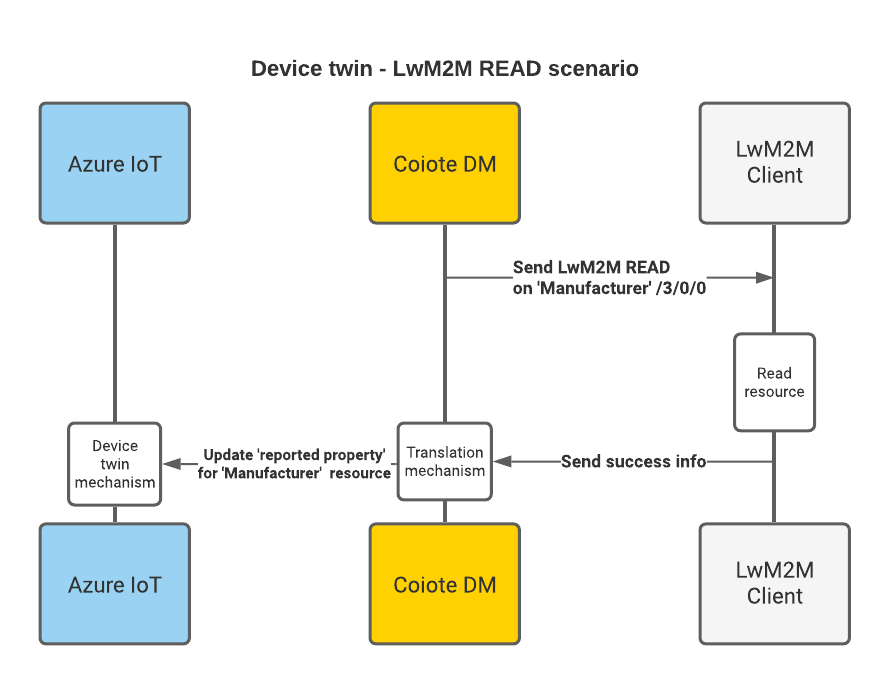

LwM2M mappings - Azure IoT Hub#
In this section you'll get to know how the mappings are arranged between the LwM2M protocol as used in Coiote DM and the data retrieval and processing mechanisms of the Azure IoT Hub.
Introduction#
The LwM2M protocol data model is organized as a three-level tree that has the following structure:
- object (e.g. a 'temperature sensor')
- object instance (e.g. 'temperature sensor #1', 'temperature sensor #2' etc.)
- resource (e.g. 'current temperature value')
- object instance (e.g. 'temperature sensor #1', 'temperature sensor #2' etc.)
In terms of operations that can be performed on an LwM2M Client, an LwM2M Server can READ all of the data model entities, and, depending on their characteristics, may also WRITE to some of them, and EXECUTE some of them. Additionally, an LwM2M Server can also OBSERVE selected resources.
Info
If you would like to dive deeper into the details of the Lightweight M2M protocol, please refer to our brief introduction to LwM2M.
This division into readable, writable, executable and observable data model entities is the basis for the mapping of LwM2M resources (as interpreted by Coiote DM) into Azure IoT Hub data processing mechanisms.
LwM2M readable and writable resources#
Within the Coiote DM - Azure IoT Hub integration, readable and writable resources are usually interpreted as part of Azure Device twin data structure.
Note
To learn more about Device twins, go to the Understand and use Device twins section of the Azure IoT Hub documentation.
For instance, the sample JSON snippet below is a tree with nested resources to represent a fragment of the LwM2M data model with path /3/1/1:
{
"deviceId": "airquality-0",
...
"properties": {
"reported": {
"lwm2m": {
"1": {
"0": {
"0": {},
"1": {
"value": 90
},
"4": {},
"6": {},
"7": {},
"8": {}
}
},
"3": {
"1": {
"1": {
"value": "airquality-0-Valparaiso"
}
}
},
...
READ - Communication flow#
Data model resources that are read-only, such as Manufacturer (with ID 3/0/0) will be mapped into the Device twin as a reported property in Azure IoT Hub.

WRITE - Communication flow#
On the other hand, a writable resource, such as Lifetime (with ID 1/0/1), apart from being represented as a reported property, can be additionally mapped as a desired property. This enables you to synchronize the device data model and configuration between Azure and Coiote DM.

In Azure IoT Hub, changing the value of a writable resource involves creating a properly formatted JSON snippet in the desired property field within the Device twin that introduces a value change:
...
"properties": {
"desired": {
"lwm2m": {
"1": {
"0": {
"0": {},
"1": {
"value": 30
}
}
}
},
...
LwM2M executable resources#
As a rule, LwM2M resources that can be executable translate into Direct methods in Azure IoT Hub. This means that by invoking a direct method or Command from Azure, you can trigger an EXECUTE operation on a chosen resource available for your device and the request will be transferred immediately by the LwM2M Server to the device.
Note
To learn more about Direct methods, go to the Understand Direct methods section of the Azure IoT Hub documentation.
In Azure IoT Hub, an executable LwM2M resource ID is mapped to a direct method in the following way:
method name: execute
{
path: "object.objectInstance.resource",
[args: "optional arguments to execute"]
}
Thus, for instance, to execute a factory reset on a device, you need to invoke a direct method with the execute name and the following payload:
{
path: "3.0.5"
}
EXECUTE - Communication flow#
Invoking a direct method from Azure IoT Hub and handling it by Coiote DM in the form of an EXECUTE operation passed to the device has the following flow:
LwM2M observable resources#
In Coiote DM, some of the resources within the device data model can be observed for changes in value. These are generally resources related to telemetry data or other measurements. Their value changes can be monitored by Coiote DM and reported to the Azure IoT Hub Device-to-cloud mechanism.
Note
To learn more about the Azure Device-to-cloud, go to sending device-to-cloud messages section of the Azure IoT Hub documentation.
Observe - Communication flow#
Setting an Observe operation on a resource in Coiote DM, for instance a temperature reading, will result in a Notify message sent by the device upon value change that Coiote DM will transfer to the Device-to-cloud mechanism of Azure IoT Hub.
What is more, you can set observations on LwM2M resources from the Azure IoT Hub level by adding appropriate attributes to the resource as a Device twin desired property. For instance, an Observe operation on resource ID 3303/1/5700 is set in the following way:
...
"properties": {
"desired": {
"lwm2m": {
"3303": {
"1": {
"5700": {
"observed": true,
"attributes": {
"pmin": 60
}
}
}
}
}
...
After JSON is saved, Azure notifies Coiote DM of the desired attribute setting which is then transferred to the device in form of an Observe operation. Once Coiote DM is notified of a value change, it is reported to the Azure Device-to-cloud mechanism.
Next steps